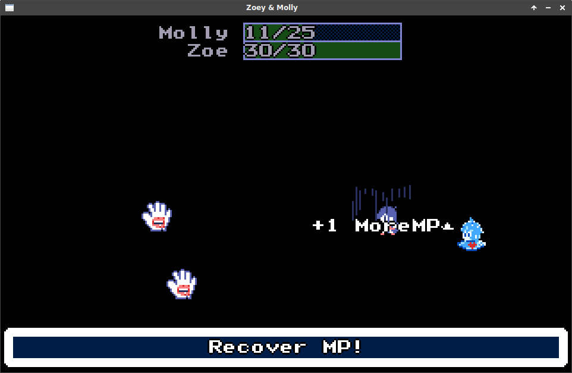

Redid Zoe Slime, Plus Other Touchups
- Category
- zoe-and-molly
- Timestamp
- Thu, 10 Nov 2016
I wanted to show off what I have so far for Zoe and Molly, as I feel like I'm getting close to the first area finished. Zoey and Molly is based off some dreams I had a while back (see the end of this blog post).
Things I'm really unhappy about and seek to resolve:
- Really need to balance the stats better
- Not completely terrible slime ball attack animation
- Better battle sprites for battle? This isn't a very high priority for me yet
- Sounds, especially the cars in the stoplight fight
- Wall details
- Crayons
- Fix floor carpet tile repeating pixels that look bad when tesselated
- Create alternative floor tiles or floor details. Snared carpet...
- Better shading for Molly's portrait
- Shinier green slime
- More options during battle, maybe consumable items that produce attacks
- Zoe the slime needs a lot of work put into stats, attacks, magic
- Better, more sound effects for some things
Here are some images and YouTubes...
Video
Screen Shots


The dream I had
What you read below is an exact log of what I wrote down after I woke up from the dream. I was a pretty different person then, too, even a year ago; I didn't feel transitioned yet and I was in a pretty dark place, and I still had a lot of emotional maturing to do and a lot of sanity to gain.
Dream Log, 2015-10-07
PREFACE
I’ve been having very vivid dreams lately, and I thought I’d share something with you, as it’s 5:41 AM and I just woke up. I’m writing this blog post after I wrote down everything I remember. The running theme I notice is trans lesbian relationship of two girls and their navigating of a mysterious world.
I’m no writer so uh… yeah… also there are parts I intentionally omitted, ’cause damn…
PART I
Trans Girl A walks, with her relative,down a super long, wide hallway. The hallway is nearly pitch back, save the rare light source from a barely-lit vending machine, or a faded fluorescent light, but mostly it is darkness. The carpet is that awful ribbed carpet, it’s navy blue, it looks cheap. It’s oddly immaculate. Occasionally passing closed doors. The hallway is decorated by random points of interests, one of which Trans Girl A stops to look at–akiddie corner when the hallway bends: simply a plastic chair, plastic table with color books, crayons, a large amount of tickets from an arcade. Nobody seems to be home.
Trans Girl A and her relative stop at a door, opening to reveal a room with two beds. It’s almost like a hotel room, but fitting into the overall context of the hallway being like a stretched basement of a YMCA and this room seems like a room belonging to such.
Trans Girl A and her relative attempt to get some sleep. Trans Girl A wakes up to someone sneaking in through a window which is parallel to her bed. It’s a large window, with that cheap pseudo-frosted tint for obscuring. Behind the window is nothingness–apparently further underground structure, with the rare glimmer of faint light. The person who snuck in through the window leaves when they realize Trans Girl A isn’t the person they’re looking for, even without a word.
Trans Girl A falls back to sleep, seemingly not bothered in the slightest. She wakes up and uses the bathroom across from her bed, and perpendicular to the window. The bathroom is a large stall-style restroom facility, seemingly with other entrances, but her portion is walled off by stalls, though someone could easily sneak from one side to another.
Trans Girl A leaves the bathroom, and a man appears behind a counter, which is to the left of the bathroom door. The counter is almost the style of a pharmacy–a wide hole in the wall. She converses with him, she tells him that “I’m not really myself, but a representative of another person,” after conversing a bit more it’s clear they’re an AI configured to represent one of Trans Girl A’s programming heroes. Trans Girl A tries to get some sleep; the man standing in front of the bathroom doorway, with his arms crossed, monitoring the scene, as if to assure that she’ll get a good night’s rest because he’ll keep her safe.
Morning never seems to come, or at least who could tell down here? Trans girl A and her relative head out of the room. They begin to walk down the hallway again, mysteriously abandoned and untouched.
PART II
Trans Girl A and her relative are in a car; the drive goes on for a long time. Trans Girl A recounts the night with her relative. Her relative doesn’t seem to talk or make noise but he’s reassuring to her. It’s pitch black outside the car. They finally arrive at a home, which is nothing special, it’s worn in. There is just a car dealership and a sea of parkinglot between the house and the enveloping darkness.
Trans Girl A tries to sleep, before she dozes off sees police lights at teh dealership, thankfully uninterested in her.
PART III
It is finally day and we’re in a new location. Everything looks very sepia and 50s-style. Trans Girl A and Trans Girl B meet during an odd job. They work their way through a series of houses, all interconnected, as antique cars pass through the alleyway, like window decorations. Random instruments are pulled from a bag, seemingly cheap, they’re wiped down and thrown into a garbage of whomever’s house they’re in. Someone phones trouble. They narrowly escape, keeping themselves below the view of the windows. There are a lot of windows–the same large french-style window as they make their way through the series of interconnected homes.
PART IV
Trans Girl A and Trans Girl B are at a train station, holding hands. This is their final escape. They rejoice by playfully having sex in their cabin.